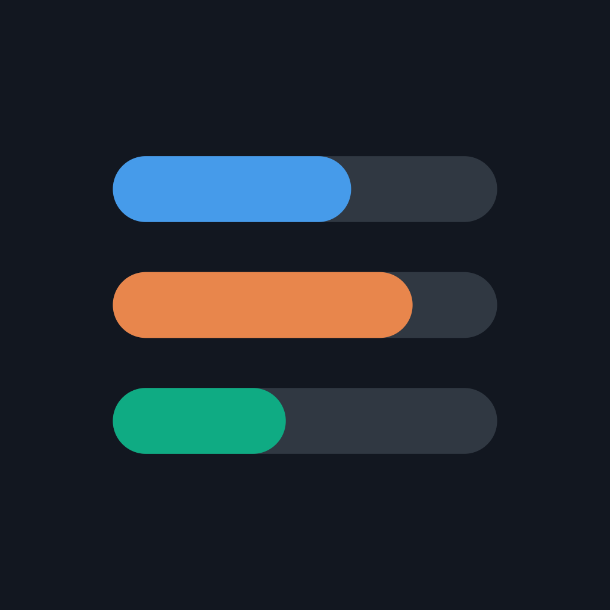
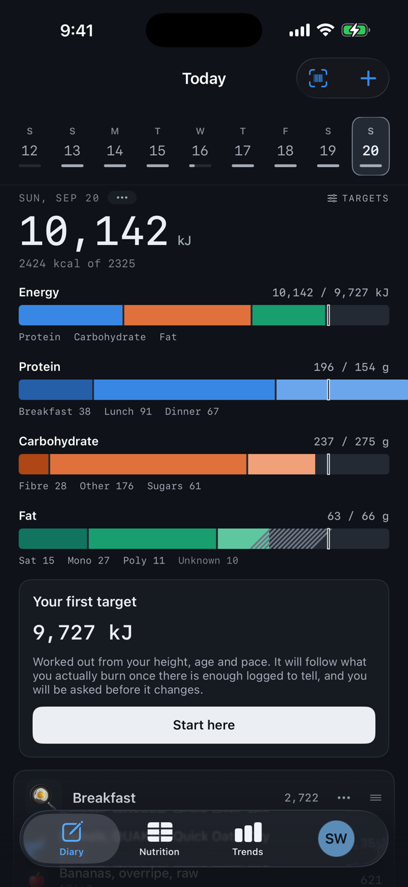
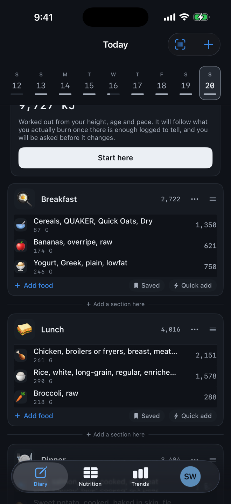
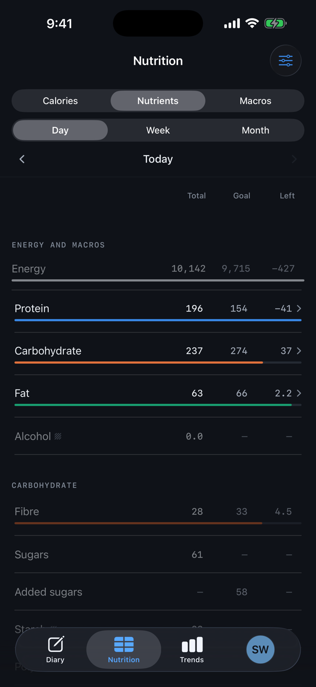
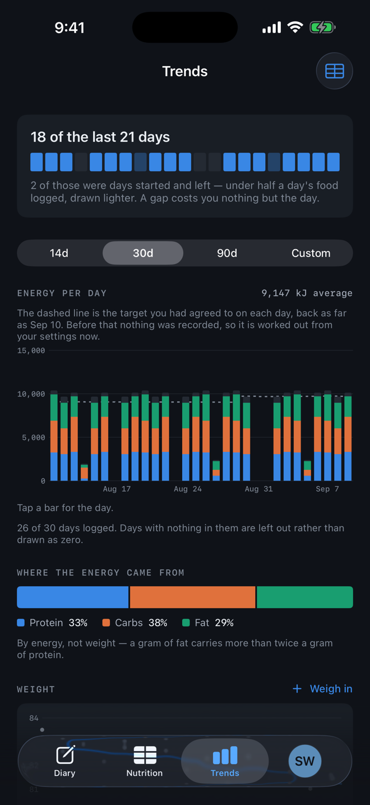
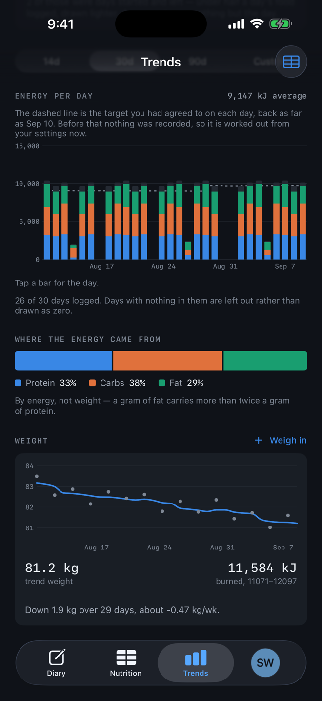
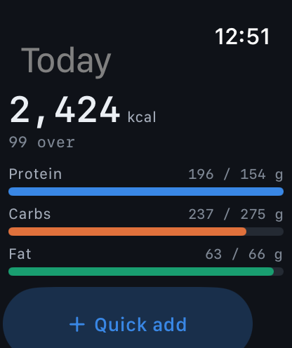

Everything for writing about Keeping Tabs: Food Diary, free to use in coverage of the app.
Press enquiries
support@keepingtabsapp.com
Promo codes for review are available on request.
Download the press kit 1.8 MB · icon, screenshots, fact sheet
Keeping Tabs is a food diary for iPhone and Apple Watch that refuses to guess. Its 333,362-food catalogue lives on the phone, so barcodes scan with no signal, and a nutrient no label declared shows as a dash, never a zero. One price, no subscription, no account, nothing uploaded. Made in Wellington, New Zealand.
Most calorie trackers fill gaps with zeros. When a packet doesn't declare its fibre, they show 0 g, and a day of those adds up to a confident number that is wrong. Keeping Tabs shows a dash instead, and keeps showing it until something declares otherwise.
The whole catalogue, 333,362 foods with 307,710 carrying nutrition, ships inside the app, so scanning a barcode works in a supermarket aisle with no signal. Photograph a nutrition panel and it reads the figures and checks them against each other: energy is the macros multiplied out, so a decimal point lost off small print gets caught. Targets start from a formula, then follow the user's own weigh-ins, and the app asks before it changes anything.
It works in kilojoules or calories, has an Apple Watch app and home screen widgets, and exports everything as CSV or JSON. There is no account, and the diary stays on the phone. It costs one payment.
“A food diary is only as honest as its gaps. If a packet never told you its fibre, the right answer is ‘we don't know’, not zero. Keeping Tabs is built around that, and around paying for it once.”
Shaun Friedberg, Pyrokinesis Ltd

keeping-tabs-icon-1024.png
1024 × 1024 PNG
Full size: 1320 × 2868 PNG (iPhone), 416 × 496 PNG (Apple Watch).





